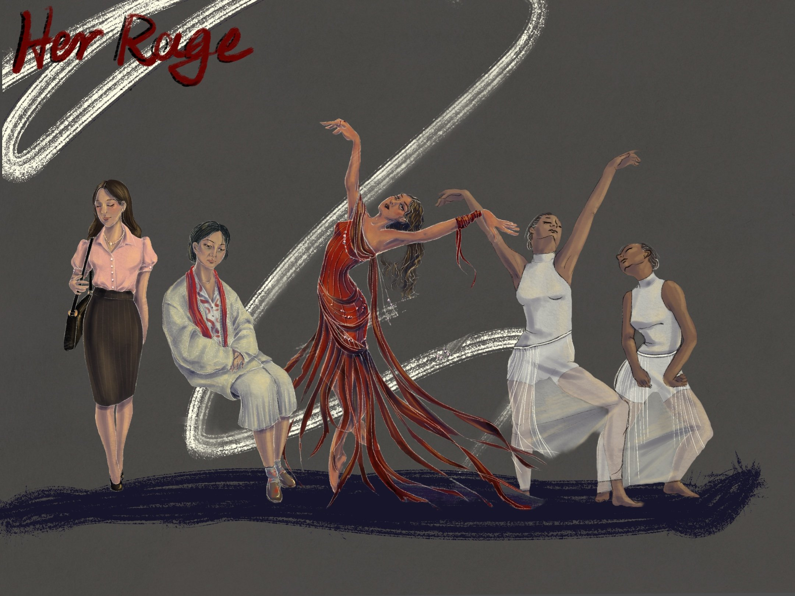
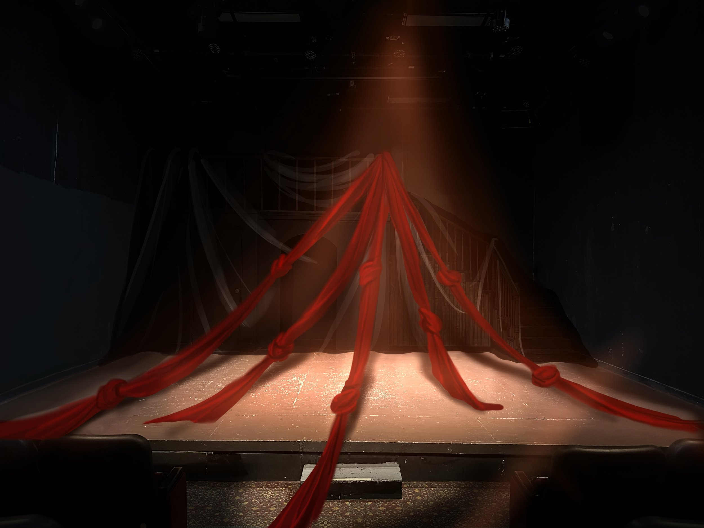
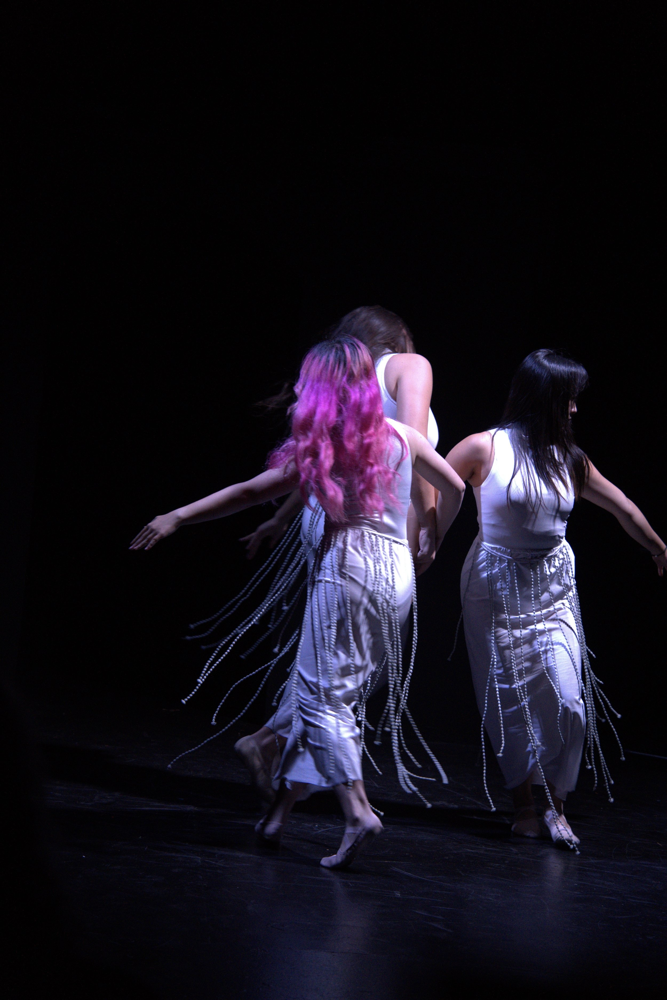
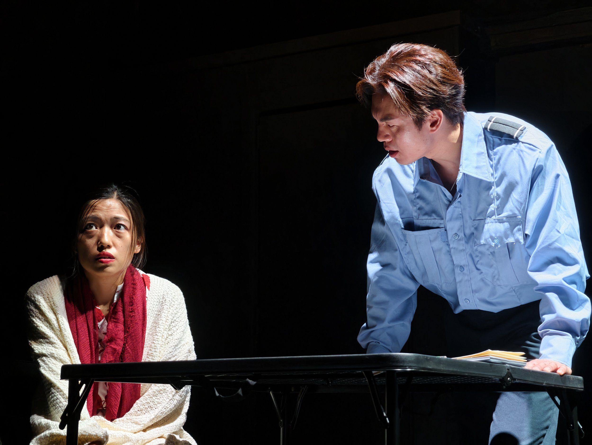
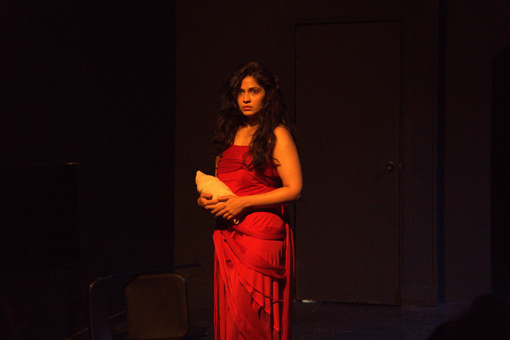

Hollywood Fringe Festival, Los Angeles, CA.
Of all things upon earth that bleed and grow, an herb most bruised is woman.
Scroll ↓

See More About Writing Her Rage on this page: Her Rage

ZHAO
We had so many argue. You know…all work, money, money, man, God. I don’t remember. Yeah. I remember a stick. A stick! Yes, a stick. He threatened to kill me. He always says that he would kill me. He grab the chair and throw it at me. I fell to the ground, then he pick up the stick and hit me like my father used to. After that, I was in the police office. But I didn’t have an ID, and my passport was at home, so they called my husband. He came here calm, and said he was sorry. I knew I had to protect myself, so I insist that I need to get a protective order, and they took me away from my husband. I have to run away from him.
REPORTER
Thank you for sharing that, it must be a painful experience.
Blank. ZHAO stares at the REPORTER.
I’m really sorry to hear what you have been through. I…fully sympathize with you. I could imagine what must be like living with someone like your husband. I…
Unpleasant silence, while ZHAO continues staring at the REPORTER. She then realizes that she said something wrong.
ZHAO
You could imagine? You could imagine being tortured by the illness, but couldn’t afford the money because you don’t have an ID? You could imagine begging your violent husband for more money. You could imagine some strangers from some government taking you to the hospital, helping you pee? You could imagine your husband beat you over and over, imagine he spit in your face? You could imagine…ahh…that…ahh…yeah.
ZHAO couldn’t find the words to say. Her mind goes blank. Silence.
You said you truly sympathize with me. Is this something that you could sympathize with?
Silence. The REPORTER avoids eye-contact with her.

“北市封喉杀夫家庭悲剧, 老荣民白新民, 昨天惨遭大陆新娘赵锦云以榔头重击脑后,菜刀封喉, 身中数十刀惨死卧室, 死者状况凄惨, 后脑被重击爆出脑浆,颈部遭利器切断食管和气管,已经见骨. 嫌疑人赵锦云杀人后投案自首, 案件细节还在调查中.”
“关于北市杀夫案, 一名七旬老人表示: 自古以来无奸不成杀, 赵杀人背后必有奸夫指点,呼吁有关部门严查案件.”
“秘闻! 杀夫案凶手曾被其丈夫指控为共匪情报人员, 夫妻情仇背后是否牵扯政治阴影?”
“杀夫案有反转! 台北市家庭暴力防治中心表示, 此案嫌疑人赵锦云与其丈夫白新民长期关系不睦, 曾多次遭受白的暴力对待, 法院亦多次核发保护令以保障赵的人身安全. 赵的辩护律师指出, 此案性质与当年的邓如雯案件高度相似, 唯赵为外籍配偶, 其台湾移民身份使案件更加复杂. 她强调, 将全力捍卫当事人的合法权益,不会轻言放弃.”
“台湾长老会表示为白及其家属致以最深切的哀悼与祈祷, 并呼吁社会关心家庭矛盾与心理健康问题, 为所有仍身陷家庭冲突与孤独痛苦中的灵魂献上关怀.”
“大过年的发生命案, 留在村子里的老邻居,七嘴八舌关心案情. 一位老太太说, 政府再不重视老荣民娶大陆新娘婚姻不合的社会问题, 她预言, 早晚会再出事的.”
”关于赵的受暴反杀行为最近在社会上引发广泛而热烈的讨论. “人伦伦理岂容践踏?”一位台湾议员表示, 夫妻虽有纷争, 诉诸私刑, 以暴制暴, 无论理由如何, 都不可被视为正当之举. 他强调: “家庭是社会的基本单位, 若纵容此类行为, 只会鼓励破坏制度的恶性循环.”

Director’s Note:
Taiwan, 1998, a foreign woman sits. After confessing to the murder of her husband, her memories goes blank. In the interrogation room, trauma brings illusion. Oppressed women and Medea dance, telling their similarly unfair destinies. Myth and reality blending…She rages.
In the 1980s, with China’s reform and opening-up policy and the end of martial law in Taiwan, cross-strait marriages began to grow. Yet shaped by the unique political and historical tensions between the two sides, mainland spouses in Taiwan—most of them women—found themselves stripped of legal residency, isolated from social networks, and often controlled by their partners.
Zhao is one of them, but she fought back. She killed her abusive husband. Yet soon she will realize that killing him is not the end of the nightmare—Endless interrogations, interviews, opening up her wound. Exhausted, she falls into illusion, where she sees Medea—and other women—dancing through a shared story of rage and sorrow.
Sometimes violence might be the only path to liberation, but it comes with a consequence. Discrimination, domestic violence, immigration barriers, language isolation… When you are a women and you are an immigrant.